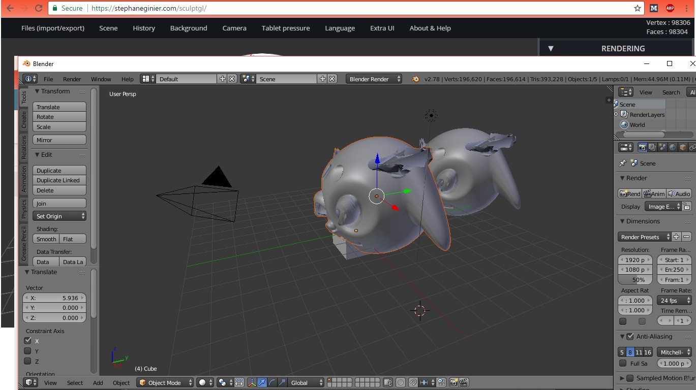

Ingrédients :
- Ibniz
- Sculptgl
- Blender
- Inkscape
- Créer un dessin sur Inskape ou alors screener un motif fait sur Ibniz. Il s'agira alors du pelage de votre monstre.
- Ensuite créer votre monstre 3D sur sculptgl ou bien blender.
- Il vous faudra ensuite insérer un motif sur un objet 3D dans sculptgl.